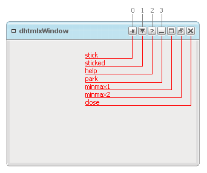

Adding Necessary Code in the Process of Development
Adding User-Button
To add this newly created button to a window the user should use the following method:
dhxWins.window(id).addUserButton(id, position, tooltip, name);
This method takes the following parameters:
- id – id of the newly created button (in our example it can be “tray”);
- position – the type of this parameter is int. This parameter defines the place of the button on the caption bar (left to right: 0 – the first button, 1 – the second, etc);
- tooltip – this parameter sets the title that appears when the user hovers the mouse over the button;
- name – the name of the button (in out example it is “tray”).
Defining Button Position
All available window buttons are shown in the following picture:

But not all of these buttons are displayed simultaneously. For example, buttons “stick” and “unstick”, “minmax1” and “minmax2” are not displayed at the same time. Each button has its inner constant position. So, when you insert some user-button, you should count button's position paying attention even to the buttons that are invisible at the moment. For example, let's put a user-button between “park” and “minmax1” ones. Counting buttons from left to right starting from 0, stop on the button “park” - we have “3” as a result. So, this new button should have “4” as its position index.
Adding Event to Button
The user can attach an event to the newly created button in the following way:
dhxWins.window(id).button(id).attachEvent("onClick", handler);
The user can also remove an event from any user-created button:
dhxWins.window(id).button(id).detachEvent("onClick");
Any user-created button can be removed in the following way:
dhxWins.window(id).button(id).removeUserButton(id);
Besides, all default button methods will be available for user-created buttons as well:
dhxWins.window(id).button(id).show(); dhxWins.window(id).button(id).hide(); dhxWins.window(id).button(id).isHidden(); dhxWins.window(id).button(id).enable(); dhxWins.window(id).button(id).disable(); dhxWins.window(id).button(id).isEnabled();
Removing User-Button
To remove any user-button from the window the user should call the following method:
dhxWins.window(id).removeUserButton(id);